Computes the projective IRT model parameters either using the
logistic kernel approximation approaches (Stucky et al. 2013;
Ip 2010/Doebler and Doebler, 2022) or the MML-PIRT approach by
Chalmers et al. (2026). These return information pertaining to a
lower-dimensional (often unidimensional) IRT model
that has marginalized one or more latent traits.
When the method is the MML-PIRT a working mirt object will be
returned, otherwise if the target is the logistic kernel
approximations then a list
of the PIRT estimates (and potentially their delta-method SEs) are returned.
Usage
pirt(
mod,
model = 1,
project = 1,
itemtype = extract.mirt(mod, "itemtype"),
estimator = "MML",
invariance = c("free_means", "free_vars"),
SE = TRUE,
SE.type = "sandwich",
IRTpars = FALSE,
shortform = NULL,
...
)
pirt_customTheta(
mod,
project = 1,
quadpts = NULL,
quadpts2 = NULL,
theta_lim = c(-6, 6),
theta_lim2 = c(-3, 3),
grid = c("scramble", "rectangular", "Halton", "shift")
)Arguments
- mod
fitted model from
mirt- model
type of PIRT model to fit to marginalized table (only applicable when
estimator == 'MML')- project
which dimension to project to in the stored E-table. Default projects all dimensions to the first dimension (
project = 1), as this is the assumed primary dimension in, for instance,bfactor()- itemtype
type of model to fit to the projected marginalized factor. Defaults to the same type as the parent object
mod. Seemirtfor details- estimator
type of PIRT estimator to use. Default is
'MML'to fit and return the MML-PIRT variable described by Chalmers et al. (in review).'FA'will use Stucky et al.'s (2012) factor analysis logistic approximation to project to the first dimension, and'LKA'will use the use logistic kernel approximation formula presented in Ip (2010)/Doebler and Doebler(2020), however these only project to the first dimension? The latter two estimators are also only applicable when input model is from the M*PL and MGRM family (see for polytomous MGRM derivation), and only return lists of the resulting parameters and SE estimatesNote that for methods other than
'MML'the SEs will be returned only if the parent model as a suitably estimated ACOV matrix to perform the delta method (e.g.,bfactor(..., SE=TRUE)- invariance
type of group invariance to specify (see
multipleGroup). Included here as the multiple-group PIRT approach needs to also calibrate the scale and location of the reference group, which is done silently internally whenever'free_means'or'free_vars'are specified- SE
logical; compute the ACOV matrix to obtain standard errors (SE)?
- SE.type
type of ACOV estimator (defaults to sandwich as this is generally the most appropriate)
- IRTpars
logical; report classical IRT parameterization and SEs? Only used when
FAapprox = TRUE- shortform
character vector of item names, or numeric vector of item locations, used create a short-form by specifying which items to extract from the PIRT model. For instance, selecting one item from each specific factor has the property of identical marginal and conditional bifactors (see Stucky, Thissen, and Elden, 2013). Only supported when using the MML-PIRT approach as this returns the associated model object
- ...
extra information passed to the estimation engine
- quadpts
number of quadrature points for the projected dimension(s). Follows the same quadrature logic found in
mirt- quadpts2
number of quadrature points for the nuisance dimension(s). If omitted defaults to either quadrature logic found in
mirtfor the nuisance dimensions, or to 500 for the quasi-Monte Carlo grids- theta_lim
range for projected dimensions integration grid
- theta_lim2
range for nuisance dimensions integration grid
- grid
type of integration grid to use
Details
Logistic kernel approximation approaches are limited only to the M2PL (and related models, like the M4PL) and MGRM family of ordinal models, while MML-PIRT can be applied to any MIRT model supported by the package.
Standard error are computed when FAapprox = TRUE via the delta method
only when the parent model estimated the ACOV matrix, while the
MML-PIRT approach does not require this prerequisite
as the ACOV can be computed directly. By default,
MML-PIRT computes the associated ACOV matrix using the Oakes'
identity given then marginalized E-table.
References
Chalmers, R. P., Falk, C. F., and Reise, S. P. (2026).
A General Approach for Estimating Projective IRT Models.
Applied Psychological Measurement. DOI: 10.1177/01466216261474955
Doebler, A., and Doebler, P. (2022). Rotate and Project: Measurement of the Intended Concept with Unidimensional Item Response Theory. from Multidimensional Ordinal Items. Multivariate Behavioral Research, 57 (1), 40-56.
Ip, H. (2010). Empirically indistinguishable multidimensional IRT and locally dependent unidimensional item response models. British Journal of Mathematical and Statistical Psychology, 63(2),395-416.
Stucky, B. D., Thissen, D., & Orlando E., M. (2012). Using Logistic Approximations of Marginal Trace Lines to Develop Short Assessments. Applied Psychological Measurement, 37(1), 41-57.
Examples
# \donttest{
# Table 3 in Ip (2010)
as <- cbind(rep(c(2.63, 1.63, 1.38), each=5),
c(rep(3.07, 5), numeric(10)),
c(numeric(5), rep(1.36, 5), numeric(5)),
c(numeric(10), rep(.69,5)))
as
#> [,1] [,2] [,3] [,4]
#> [1,] 2.63 3.07 0.00 0.00
#> [2,] 2.63 3.07 0.00 0.00
#> [3,] 2.63 3.07 0.00 0.00
#> [4,] 2.63 3.07 0.00 0.00
#> [5,] 2.63 3.07 0.00 0.00
#> [6,] 1.63 0.00 1.36 0.00
#> [7,] 1.63 0.00 1.36 0.00
#> [8,] 1.63 0.00 1.36 0.00
#> [9,] 1.63 0.00 1.36 0.00
#> [10,] 1.63 0.00 1.36 0.00
#> [11,] 1.38 0.00 0.00 0.69
#> [12,] 1.38 0.00 0.00 0.69
#> [13,] 1.38 0.00 0.00 0.69
#> [14,] 1.38 0.00 0.00 0.69
#> [15,] 1.38 0.00 0.00 0.69
set.seed(8675309)
d <- round(rnorm(15, 0, sd=1.5), 2)
nitems <- length(d)
nfact <- ncol(as)
dat <- simdata(as, d, 10000, itemtype='2PL')
itemstats(dat)
#> $overall
#> N mean.total sd.total std.alpha alpha SEM.alpha mean.r sd.r
#> 10000 7.959 3.909 0.842 0.844 1.546 0.262 0.112
#>
#> $itemstats
#> N K mean sd cor_if_rm smc alpha_if_rm
#> Item_1 10000 2 0.359 0.480 0.554 0.459 0.829
#> Item_2 10000 2 0.585 0.493 0.588 0.532 0.827
#> Item_3 10000 2 0.412 0.492 0.556 0.491 0.829
#> Item_4 10000 2 0.754 0.431 0.512 0.415 0.832
#> Item_5 10000 2 0.636 0.481 0.571 0.514 0.828
#> Item_6 10000 2 0.716 0.451 0.463 0.303 0.835
#> Item_7 10000 2 0.512 0.500 0.479 0.311 0.834
#> Item_8 10000 2 0.639 0.480 0.475 0.311 0.834
#> Item_9 10000 2 0.625 0.484 0.484 0.323 0.833
#> Item_10 10000 2 0.694 0.461 0.466 0.296 0.834
#> Item_11 10000 2 0.156 0.362 0.321 0.133 0.842
#> Item_12 10000 2 0.744 0.437 0.373 0.156 0.840
#> Item_13 10000 2 0.537 0.499 0.414 0.198 0.838
#> Item_14 10000 2 0.325 0.468 0.395 0.187 0.839
#> Item_15 10000 2 0.268 0.443 0.378 0.179 0.839
#>
# bifactor model, storing E-table
mod <- bfactor(dat,
"S1 = 1-5
S2 = 6-10
S3 = 11-15")
#>
summary(mod)
#> G S1 S2 S3 h2
#> Item_1 0.635 0.663 0.843
#> Item_2 0.619 0.682 0.849
#> Item_3 0.601 0.690 0.838
#> Item_4 0.591 0.706 0.847
#> Item_5 0.609 0.684 0.839
#> Item_6 0.591 0.528 0.629
#> Item_7 0.582 0.542 0.633
#> Item_8 0.580 0.521 0.608
#> Item_9 0.602 0.511 0.623
#> Item_10 0.594 0.495 0.598
#> Item_11 0.592 0.320 0.453
#> Item_12 0.593 0.309 0.447
#> Item_13 0.597 0.304 0.449
#> Item_14 0.600 0.285 0.441
#> Item_15 0.597 0.337 0.470
#>
#> SS loadings: 5.383 2.347 1.35 0.484
#> Proportion Var: 0.359 0.156 0.09 0.032
#>
#> Factor correlations:
#>
#> G S1 S2 S3
#> G 1
#> S1 0 1
#> S2 0 0 1
#> S3 0 0 0 1
coef(mod, simplify=TRUE)$items
#> a1 a2 a3 a4 d g u
#> Item_1 2.729345 2.846581 0.000000 0.0000000 -1.56858394 0 1
#> Item_2 2.710066 2.985882 0.000000 0.0000000 0.93445084 0 1
#> Item_3 2.538632 2.915514 0.000000 0.0000000 -0.95134299 0 1
#> Item_4 2.568397 3.069943 0.000000 0.0000000 3.00788745 0 1
#> Item_5 2.580091 2.896409 0.000000 0.0000000 1.47560437 0 1
#> Item_6 1.651204 0.000000 1.474984 0.0000000 1.60137755 0 1
#> Item_7 1.635430 0.000000 1.522018 0.0000000 0.07876651 0 1
#> Item_8 1.576305 0.000000 1.415662 0.0000000 0.97158094 0 1
#> Item_9 1.667799 0.000000 1.414830 0.0000000 0.88640083 0 1
#> Item_10 1.594241 0.000000 1.329522 0.0000000 1.36578888 0 1
#> Item_11 1.362801 0.000000 0.000000 0.7364140 -2.35080843 0 1
#> Item_12 1.358706 0.000000 0.000000 0.7069465 1.50011666 0 1
#> Item_13 1.367885 0.000000 0.000000 0.6966279 0.21359522 0 1
#> Item_14 1.364983 0.000000 0.000000 0.6481644 -1.02988427 0 1
#> Item_15 1.396245 0.000000 0.000000 0.7867648 -1.44972019 0 1
# PIRT model via MML-PIRT
pmod <- pirt(mod)
coef(pmod)
#> $Item_1
#> a1 d g u
#> par 1.374 -0.787 0 1
#> CI_2.5 1.230 -0.947 NA NA
#> CI_97.5 1.517 -0.626 NA NA
#>
#> $Item_2
#> a1 d g u
#> par 1.313 0.454 0 1
#> CI_2.5 1.202 0.281 NA NA
#> CI_97.5 1.423 0.628 NA NA
#>
#> $Item_3
#> a1 d g u
#> par 1.244 -0.464 0 1
#> CI_2.5 1.121 -0.619 NA NA
#> CI_97.5 1.367 -0.309 NA NA
#>
#> $Item_4
#> a1 d g u
#> par 1.254 1.446 0 1
#> CI_2.5 1.130 1.283 NA NA
#> CI_97.5 1.378 1.609 NA NA
#>
#> $Item_5
#> a1 d g u
#> par 1.284 0.733 0 1
#> CI_2.5 1.174 0.562 NA NA
#> CI_97.5 1.394 0.904 NA NA
#>
#> $Item_6
#> a1 d g u
#> par 1.240 1.192 0 1
#> CI_2.5 1.080 1.061 NA NA
#> CI_97.5 1.401 1.323 NA NA
#>
#> $Item_7
#> a1 d g u
#> par 1.183 0.059 0 1
#> CI_2.5 1.083 -0.096 NA NA
#> CI_97.5 1.284 0.215 NA NA
#>
#> $Item_8
#> a1 d g u
#> par 1.189 0.731 0 1
#> CI_2.5 1.060 0.589 NA NA
#> CI_97.5 1.319 0.874 NA NA
#>
#> $Item_9
#> a1 d g u
#> par 1.259 0.669 0 1
#> CI_2.5 1.123 0.519 NA NA
#> CI_97.5 1.395 0.818 NA NA
#>
#> $Item_10
#> a1 d g u
#> par 1.244 1.059 0 1
#> CI_2.5 1.092 0.923 NA NA
#> CI_97.5 1.397 1.196 NA NA
#>
#> $Item_11
#> a1 d g u
#> par 1.264 -2.158 0 1
#> CI_2.5 1.062 -2.264 NA NA
#> CI_97.5 1.466 -2.052 NA NA
#>
#> $Item_12
#> a1 d g u
#> par 1.248 1.374 0 1
#> CI_2.5 1.103 1.235 NA NA
#> CI_97.5 1.394 1.513 NA NA
#>
#> $Item_13
#> a1 d g u
#> par 1.251 0.194 0 1
#> CI_2.5 1.166 0.029 NA NA
#> CI_97.5 1.335 0.359 NA NA
#>
#> $Item_14
#> a1 d g u
#> par 1.268 -0.955 0 1
#> CI_2.5 1.150 -1.105 NA NA
#> CI_97.5 1.386 -0.805 NA NA
#>
#> $Item_15
#> a1 d g u
#> par 1.263 -1.305 0 1
#> CI_2.5 1.124 -1.443 NA NA
#> CI_97.5 1.402 -1.168 NA NA
#>
#> $GroupPars
#> MEAN_1 COV_11
#> par 0.007 1.393
#> CI_2.5 -0.142 1.313
#> CI_97.5 0.156 1.472
#>
coef(pmod, printSE=TRUE)
#> $Item_1
#> a1 d logit(g) logit(u)
#> par 1.374 -0.787 -999 999
#> SE 0.073 0.082 NA NA
#>
#> $Item_2
#> a1 d logit(g) logit(u)
#> par 1.313 0.454 -999 999
#> SE 0.056 0.089 NA NA
#>
#> $Item_3
#> a1 d logit(g) logit(u)
#> par 1.244 -0.464 -999 999
#> SE 0.063 0.079 NA NA
#>
#> $Item_4
#> a1 d logit(g) logit(u)
#> par 1.254 1.446 -999 999
#> SE 0.063 0.083 NA NA
#>
#> $Item_5
#> a1 d logit(g) logit(u)
#> par 1.284 0.733 -999 999
#> SE 0.056 0.087 NA NA
#>
#> $Item_6
#> a1 d logit(g) logit(u)
#> par 1.240 1.192 -999 999
#> SE 0.082 0.067 NA NA
#>
#> $Item_7
#> a1 d logit(g) logit(u)
#> par 1.183 0.059 -999 999
#> SE 0.051 0.079 NA NA
#>
#> $Item_8
#> a1 d logit(g) logit(u)
#> par 1.189 0.731 -999 999
#> SE 0.066 0.073 NA NA
#>
#> $Item_9
#> a1 d logit(g) logit(u)
#> par 1.259 0.669 -999 999
#> SE 0.070 0.076 NA NA
#>
#> $Item_10
#> a1 d logit(g) logit(u)
#> par 1.244 1.059 -999 999
#> SE 0.078 0.070 NA NA
#>
#> $Item_11
#> a1 d logit(g) logit(u)
#> par 1.264 -2.158 -999 999
#> SE 0.103 0.054 NA NA
#>
#> $Item_12
#> a1 d logit(g) logit(u)
#> par 1.248 1.374 -999 999
#> SE 0.074 0.071 NA NA
#>
#> $Item_13
#> a1 d logit(g) logit(u)
#> par 1.251 0.194 -999 999
#> SE 0.043 0.084 NA NA
#>
#> $Item_14
#> a1 d logit(g) logit(u)
#> par 1.268 -0.955 -999 999
#> SE 0.060 0.077 NA NA
#>
#> $Item_15
#> a1 d logit(g) logit(u)
#> par 1.263 -1.305 -999 999
#> SE 0.071 0.070 NA NA
#>
#> $GroupPars
#> MEAN_1 COV_11
#> par 0.007 1.393
#> SE 0.076 0.041
#>
coef(pmod, simplify=TRUE)$items
#> a1 d g u
#> Item_1 1.373519 -0.78655372 0 1
#> Item_2 1.312659 0.45427239 0 1
#> Item_3 1.243922 -0.46406656 0 1
#> Item_4 1.254440 1.44551969 0 1
#> Item_5 1.284237 0.73293495 0 1
#> Item_6 1.240230 1.19182075 0 1
#> Item_7 1.183431 0.05931385 0 1
#> Item_8 1.189413 0.73136388 0 1
#> Item_9 1.258892 0.66864187 0 1
#> Item_10 1.244321 1.05930037 0 1
#> Item_11 1.264221 -2.15792712 0 1
#> Item_12 1.248219 1.37388268 0 1
#> Item_13 1.250500 0.19422200 0 1
#> Item_14 1.267997 -0.95508222 0 1
#> Item_15 1.262993 -1.30545680 0 1
# Logistic approximations (parameters only)
pirt(mod, estimator = 'FA')
#> a d
#> Item_1 1.400635 -0.80496017
#> Item_2 1.342061 0.46275254
#> Item_3 1.279863 -0.47962401
#> Item_4 1.245353 1.45845135
#> Item_5 1.307148 0.74758351
#> Item_6 1.247827 1.21017266
#> Item_7 1.219083 0.05871418
#> Item_8 1.211885 0.74696533
#> Item_9 1.282536 0.68164148
#> Item_10 1.256360 1.07632564
#> Item_11 1.250746 -2.15751484
#> Item_12 1.254771 1.38536380
#> Item_13 1.265950 0.19767795
#> Item_14 1.275614 -0.96245496
#> Item_15 1.267386 -1.31592604
pirt(mod, estimator = 'LKA') # effectively the same
#> a d
#> Item_1 1.399687 -0.8044154
#> Item_2 1.341130 0.4624317
#> Item_3 1.278986 -0.4792954
#> Item_4 1.244478 1.4574265
#> Item_5 1.306256 0.7470730
#> Item_6 1.247335 1.2096956
#> Item_7 1.218585 0.0586902
#> Item_8 1.211430 0.7466846
#> Item_9 1.282054 0.6813855
#> Item_10 1.255922 1.0759507
#> Item_11 1.250565 -2.1572020
#> Item_12 1.254601 1.3851764
#> Item_13 1.265783 0.1976519
#> Item_14 1.275466 -0.9623429
#> Item_15 1.267181 -1.3157130
# plots
plot(pmod)
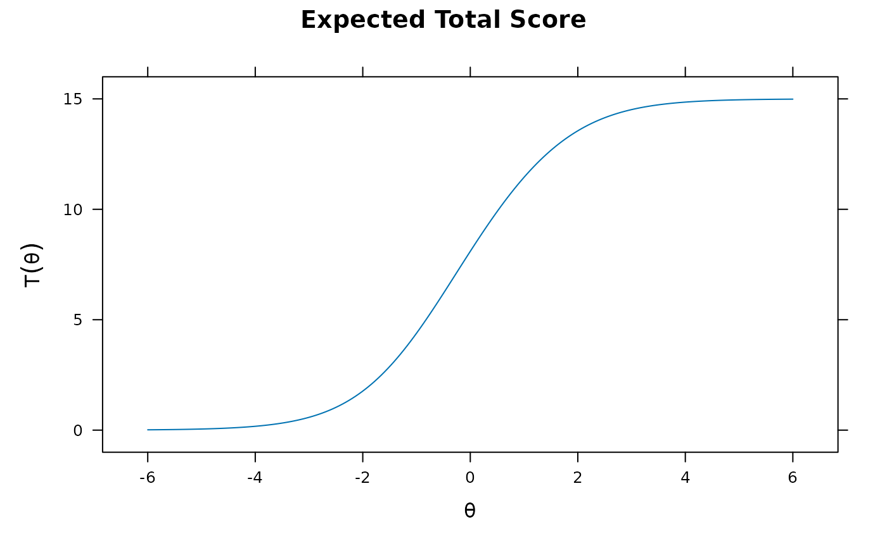
plot(pmod, type = 'info')
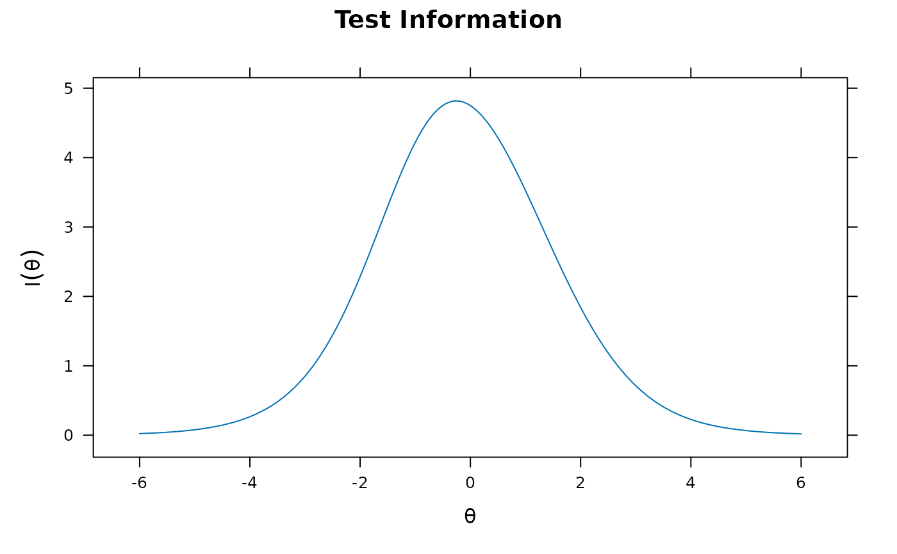
plot(pmod, type = 'itemscore')
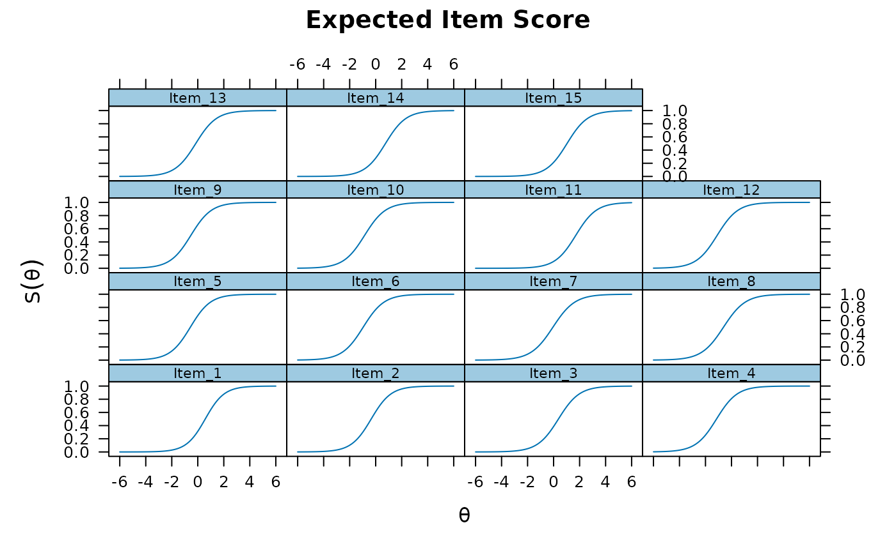
plot(pmod, type = 'infotrace')
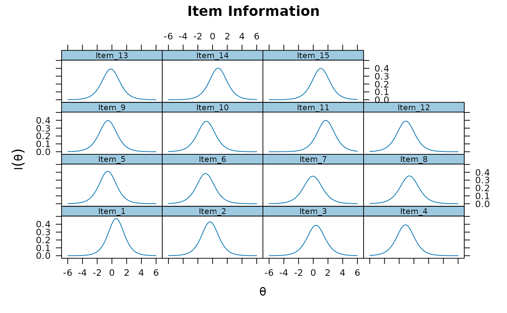
itemplot(pmod, 1, type = 'info', CE=TRUE)
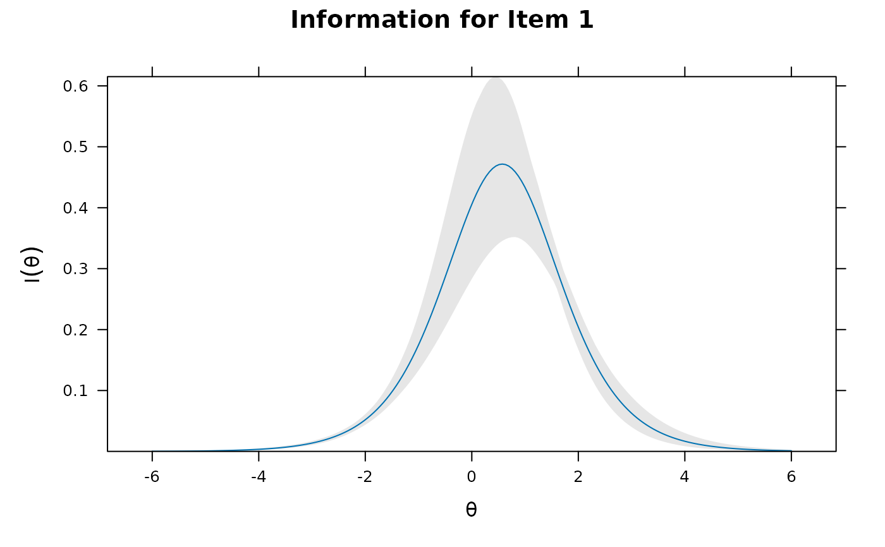
# standardized loadings
summary(pmod)
#> F1 h2
#> Item_1 0.690 0.476
#> Item_2 0.673 0.453
#> Item_3 0.653 0.427
#> Item_4 0.656 0.431
#> Item_5 0.665 0.442
#> Item_6 0.652 0.425
#> Item_7 0.634 0.402
#> Item_8 0.636 0.405
#> Item_9 0.658 0.432
#> Item_10 0.653 0.427
#> Item_11 0.659 0.435
#> Item_12 0.654 0.428
#> Item_13 0.655 0.429
#> Item_14 0.660 0.436
#> Item_15 0.659 0.434
#>
#> SE.F1
#> Item_1 0.019
#> Item_2 0.016
#> Item_3 0.019
#> Item_4 0.019
#> Item_5 0.016
#> Item_6 0.025
#> Item_7 0.016
#> Item_8 0.021
#> Item_9 0.021
#> Item_10 0.023
#> Item_11 0.030
#> Item_12 0.022
#> Item_13 0.013
#> Item_14 0.018
#> Item_15 0.021
#>
#> SS loadings: 6.482
#> Proportion Var: 0.432
#>
#> Factor correlations:
#>
#> F1
#> F1 1
# factor scores (EAP). Not optimal as the estimates/SEs ignore
# the marginal components
fscores(pmod, method = 'EAPsum', full.scores=FALSE) # EAPs for sum-scores
#> Sum.Scores F1 SE_F1 observed expected std.res
#> 0 0 -2.409 0.658 224 203.147 1.463
#> 1 1 -1.939 0.573 371 356.522 0.767
#> 2 2 -1.570 0.518 464 470.208 0.286
#> 3 3 -1.259 0.482 513 560.334 2.000
#> 4 4 -0.983 0.459 631 635.589 0.182
#> 5 5 -0.729 0.444 673 699.964 1.019
#> 6 6 -0.487 0.436 763 754.690 0.302
#> 7 7 -0.250 0.433 802 799.146 0.101
#> 8 8 -0.014 0.435 839 831.271 0.268
#> 9 9 0.227 0.441 848 847.798 0.007
#> 10 10 0.479 0.453 839 844.448 0.187
#> 11 11 0.748 0.471 817 815.979 0.036
#> 12 12 1.043 0.497 844 755.762 3.210
#> 13 13 1.380 0.536 631 654.456 0.917
#> 14 14 1.780 0.593 493 498.363 0.240
#> 15 15 2.288 0.679 248 272.321 1.474
# EAPs using Lord-Wingersky 2.0 approach (recommended if using sum-scores)
fscores(mod, method = 'EAPsum_2.0', full.scores=FALSE)
#> Sum.Scores G SE_G observed expected std.res
#> 0 0 -1.836 0.660 224 224.130 0.009
#> 1 1 -1.448 0.612 371 364.156 0.359
#> 2 2 -1.168 0.590 464 454.392 0.451
#> 3 3 -0.947 0.579 513 531.754 0.813
#> 4 4 -0.755 0.572 631 611.052 0.807
#> 5 5 -0.572 0.566 673 697.142 0.914
#> 6 6 -0.384 0.562 763 769.989 0.252
#> 7 7 -0.198 0.561 802 812.369 0.364
#> 8 8 -0.020 0.563 839 829.863 0.317
#> 9 9 0.153 0.564 848 837.241 0.372
#> 10 10 0.333 0.564 839 840.995 0.069
#> 11 11 0.536 0.563 817 835.036 0.624
#> 12 12 0.777 0.568 844 788.911 1.961
#> 13 13 1.061 0.581 631 668.226 1.440
#> 14 14 1.395 0.608 493 484.779 0.373
#> 15 15 1.808 0.657 248 249.963 0.124
# EAP scores from full response data (not generally recommended)
fscores(pmod, full.scores=FALSE) |> head()
#> Item_1 Item_2 Item_3 Item_4 Item_5 Item_6 Item_7 Item_8 Item_9 Item_10
#> [1,] 0 0 0 0 0 0 0 0 0 0
#> [2,] 0 0 0 0 0 0 0 0 0 0
#> [3,] 0 0 0 0 0 0 0 0 0 0
#> [4,] 0 0 0 0 0 0 0 0 0 0
#> [5,] 0 0 0 0 0 0 0 0 0 0
#> [6,] 0 0 0 0 0 0 0 0 0 0
#> Item_11 Item_12 Item_13 Item_14 Item_15 F1 SE_F1
#> [1,] 0 0 0 0 0 -2.408582 0.6580622
#> [2,] 0 0 0 0 1 -1.934740 0.5722217
#> [3,] 0 0 0 1 0 -1.933102 0.5719512
#> [4,] 0 0 0 1 1 -1.561299 0.5167212
#> [5,] 0 0 1 0 0 -1.938835 0.5728989
#> [6,] 0 0 1 1 0 -1.564637 0.5171585
fs <- fscores(pmod)
# compare to bifactor scores (marginal vs conditional)
bfs <- fscores(mod, method = 'MAP')
cor(bfs[,1], fs)
#> F1
#> [1,] 0.9813633
# item fit (silly, but possible)
itemfit(pmod)
#> item S_X2 df.S_X2 RMSEA.S_X2 p.S_X2
#> 1 Item_1 132.363 10 0.035 0.000
#> 2 Item_2 196.807 10 0.043 0.000
#> 3 Item_3 159.887 10 0.039 0.000
#> 4 Item_4 142.766 10 0.036 0.000
#> 5 Item_5 193.684 10 0.043 0.000
#> 6 Item_6 28.976 10 0.014 0.001
#> 7 Item_7 61.601 10 0.023 0.000
#> 8 Item_8 13.911 10 0.006 0.177
#> 9 Item_9 13.891 10 0.006 0.178
#> 10 Item_10 22.363 10 0.011 0.013
#> 11 Item_11 82.996 10 0.027 0.000
#> 12 Item_12 202.477 10 0.044 0.000
#> 13 Item_13 163.034 10 0.039 0.000
#> 14 Item_14 139.633 10 0.036 0.000
#> 15 Item_15 109.038 10 0.031 0.000
# three item shortform by taking the highest PIRT discrimination/slope terms
# per specific factor to ensure that the marginal and joint likelihood
# functions are comparable (see Stucky et al. 2013 for details)
slopes <- coef(pmod, simplify=TRUE)$items[,'a1']
slopes
#> Item_1 Item_2 Item_3 Item_4 Item_5 Item_6 Item_7 Item_8
#> 1.373519 1.312659 1.243922 1.254440 1.284237 1.240230 1.183431 1.189413
#> Item_9 Item_10 Item_11 Item_12 Item_13 Item_14 Item_15
#> 1.258892 1.244321 1.264221 1.248219 1.250500 1.267997 1.262993
namemax <- \(slp) names(slp)[which.max(slp)]
shortform <- c(namemax(slopes[1:5]),
namemax(slopes[6:10]), namemax(slopes[11:15]))
pirt_short <- pirt(mod, shortform=shortform)
#> Error: Too few degrees of freedom. There are only 7 degrees of freedom but 8 parameters were freely estimated.
coef(pirt_short, simplify=TRUE)$items
#> Error in h(simpleError(msg, call)): error in evaluating the argument 'object' in selecting a method for function 'coef': object 'pirt_short' not found
# EAP-sum for short form
fscores(pirt_short, method='EAPsum', full.scores=FALSE)
#> Error: object 'pirt_short' not found
###########################
# same example, but with polytomous data
# Table 3 in Ip (2010)
as <- cbind(rep(c(2.63, 1.63, 1.38), each=5),
c(rep(3.07, 5), numeric(10)),
c(numeric(5), rep(1.36, 5), numeric(5)),
c(numeric(10), rep(.69,5)))
as
#> [,1] [,2] [,3] [,4]
#> [1,] 2.63 3.07 0.00 0.00
#> [2,] 2.63 3.07 0.00 0.00
#> [3,] 2.63 3.07 0.00 0.00
#> [4,] 2.63 3.07 0.00 0.00
#> [5,] 2.63 3.07 0.00 0.00
#> [6,] 1.63 0.00 1.36 0.00
#> [7,] 1.63 0.00 1.36 0.00
#> [8,] 1.63 0.00 1.36 0.00
#> [9,] 1.63 0.00 1.36 0.00
#> [10,] 1.63 0.00 1.36 0.00
#> [11,] 1.38 0.00 0.00 0.69
#> [12,] 1.38 0.00 0.00 0.69
#> [13,] 1.38 0.00 0.00 0.69
#> [14,] 1.38 0.00 0.00 0.69
#> [15,] 1.38 0.00 0.00 0.69
set.seed(8675309)
diffs <- t(apply(matrix(runif(20*4, .5, 1), 20), 1, cumsum))
diffs <- -(diffs - rowMeans(diffs))
d <- diffs + rnorm(20)
nitems <- nrow(d)
nfact <- ncol(as)
dat <- simdata(as, d, 10000, itemtype='graded')
itemstats(dat)
#> $overall
#> N mean.total sd.total std.alpha alpha SEM.alpha mean.r sd.r
#> 10000 26.966 15.804 0.888 0.89 5.238 0.347 0.136
#>
#> $itemstats
#> N K mean sd cor_if_rm smc alpha_if_rm
#> Item_1 10000 5 1.748 1.799 0.658 0.645 0.879
#> Item_2 10000 5 1.958 1.797 0.671 0.664 0.878
#> Item_3 10000 5 1.985 1.796 0.669 0.661 0.878
#> Item_4 10000 5 2.232 1.790 0.667 0.650 0.878
#> Item_5 10000 5 1.876 1.810 0.667 0.661 0.878
#> Item_6 10000 5 1.943 1.712 0.533 0.407 0.884
#> Item_7 10000 5 1.534 1.679 0.530 0.396 0.884
#> Item_8 10000 5 0.977 1.494 0.487 0.332 0.886
#> Item_9 10000 5 2.140 1.759 0.533 0.402 0.884
#> Item_10 10000 5 2.030 1.699 0.543 0.405 0.884
#> Item_11 10000 5 2.068 1.607 0.493 0.295 0.886
#> Item_12 10000 5 2.067 1.623 0.471 0.273 0.887
#> Item_13 10000 5 1.475 1.581 0.480 0.284 0.886
#> Item_14 10000 5 0.780 1.281 0.431 0.228 0.888
#> Item_15 10000 5 2.155 1.665 0.485 0.295 0.886
#>
# bifactor model, storing E-table
mod <- bfactor(dat,
"S1 = 1-5
S2 = 6-10
S3 = 11-15")
#>
summary(mod)
#> G S1 S2 S3 h2
#> Item_1 0.613 0.681 0.840
#> Item_2 0.625 0.673 0.843
#> Item_3 0.623 0.672 0.839
#> Item_4 0.628 0.675 0.851
#> Item_5 0.623 0.677 0.847
#> Item_6 0.582 0.524 0.613
#> Item_7 0.589 0.507 0.604
#> Item_8 0.604 0.496 0.610
#> Item_9 0.601 0.516 0.628
#> Item_10 0.598 0.495 0.603
#> Item_11 0.600 0.310 0.456
#> Item_12 0.577 0.303 0.424
#> Item_13 0.597 0.303 0.448
#> Item_14 0.604 0.321 0.468
#> Item_15 0.602 0.353 0.487
#>
#> SS loadings: 5.481 2.283 1.29 0.508
#> Proportion Var: 0.365 0.152 0.086 0.034
#>
#> Factor correlations:
#>
#> G S1 S2 S3
#> G 1
#> S1 0 1
#> S2 0 0 1
#> S3 0 0 0 1
coef(mod, simplify=TRUE)$items
#> a1 a2 a3 a4 d1 d2 d3
#> Item_1 2.606454 2.896438 0.000000 0.0000000 0.3461174 -0.15193526 -1.09939280
#> Item_2 2.679074 2.884705 0.000000 0.0000000 1.2142272 0.27096472 -0.66839388
#> Item_3 2.639394 2.847964 0.000000 0.0000000 1.2354367 0.31644095 -0.40349378
#> Item_4 2.770114 2.977204 0.000000 0.0000000 1.8437257 1.18983324 0.25081566
#> Item_5 2.707559 2.945173 0.000000 0.0000000 0.8094373 0.02327422 -0.65593596
#> Item_6 1.591727 0.000000 1.434926 0.0000000 1.0522630 0.15634774 -0.35127897
#> Item_7 1.594155 0.000000 1.372718 0.0000000 0.1607232 -0.45237873 -1.12284459
#> Item_8 1.645872 0.000000 1.351244 0.0000000 -1.0559655 -1.60557387 -2.17629976
#> Item_9 1.678862 0.000000 1.440895 0.0000000 1.1815376 0.59642170 -0.07435316
#> Item_10 1.616393 0.000000 1.337546 0.0000000 1.3114363 0.38456142 -0.51012581
#> Item_11 1.383423 0.000000 0.000000 0.7152789 1.4594442 0.49614358 -0.41448961
#> Item_12 1.293694 0.000000 0.000000 0.6791538 1.3247558 0.43511389 -0.25896790
#> Item_13 1.368099 0.000000 0.000000 0.6951099 0.3029424 -0.37313529 -1.23470230
#> Item_14 1.409718 0.000000 0.000000 0.7491920 -0.9814945 -1.78271060 -2.52752766
#> Item_15 1.429251 0.000000 0.000000 0.8392255 1.3096690 0.71145845 -0.15133731
#> d4
#> Item_1 -1.9193970
#> Item_2 -1.2971923
#> Item_3 -1.3225427
#> Item_4 -0.6521361
#> Item_5 -1.6050655
#> Item_6 -1.2991596
#> Item_7 -1.9743704
#> Item_8 -3.0765351
#> Item_9 -0.7177150
#> Item_10 -0.9960016
#> Item_11 -1.1000675
#> Item_12 -1.1089834
#> Item_13 -2.0281101
#> Item_14 -3.4408504
#> Item_15 -0.8799403
# PIRT model via MML-PIRT
pmod <- pirt(mod)
coef(pmod)
#> $Item_1
#> a1 d1 d2 d3 d4
#> par 1.280 0.173 -0.070 -0.534 -0.941
#> CI_2.5 1.181 0.119 -0.124 -0.591 -1.000
#> CI_97.5 1.379 0.227 -0.016 -0.478 -0.882
#>
#> $Item_2
#> a1 d1 d2 d3 d4
#> par 1.315 0.600 0.136 -0.327 -0.639
#> CI_2.5 1.213 0.544 0.081 -0.383 -0.697
#> CI_97.5 1.417 0.656 0.191 -0.270 -0.581
#>
#> $Item_3
#> a1 d1 d2 d3 d4
#> par 1.304 0.619 0.160 -0.199 -0.656
#> CI_2.5 1.203 0.563 0.104 -0.255 -0.713
#> CI_97.5 1.405 0.674 0.215 -0.143 -0.599
#>
#> $Item_4
#> a1 d1 d2 d3 d4
#> par 1.335 0.891 0.572 0.117 -0.318
#> CI_2.5 1.231 0.834 0.515 0.061 -0.374
#> CI_97.5 1.439 0.948 0.628 0.173 -0.261
#>
#> $Item_5
#> a1 d1 d2 d3 d4
#> par 1.309 0.398 0.017 -0.313 -0.776
#> CI_2.5 1.208 0.342 -0.039 -0.369 -0.835
#> CI_97.5 1.410 0.453 0.072 -0.256 -0.718
#>
#> $Item_6
#> a1 d1 d2 d3 d4
#> par 1.182 0.786 0.119 -0.258 -0.965
#> CI_2.5 1.119 0.731 0.067 -0.309 -1.020
#> CI_97.5 1.244 0.841 0.171 -0.206 -0.910
#>
#> $Item_7
#> a1 d1 d2 d3 d4
#> par 1.208 0.128 -0.337 -0.845 -1.498
#> CI_2.5 1.143 0.077 -0.388 -0.898 -1.556
#> CI_97.5 1.272 0.179 -0.286 -0.792 -1.439
#>
#> $Item_8
#> a1 d1 d2 d3 d4
#> par 1.273 -0.809 -1.235 -1.679 -2.388
#> CI_2.5 1.199 -0.860 -1.289 -1.738 -2.458
#> CI_97.5 1.347 -0.759 -1.181 -1.620 -2.318
#>
#> $Item_9
#> a1 d1 d2 d3 d4
#> par 1.243 0.879 0.444 -0.053 -0.531
#> CI_2.5 1.177 0.823 0.391 -0.105 -0.584
#> CI_97.5 1.310 0.936 0.497 -0.001 -0.478
#>
#> $Item_10
#> a1 d1 d2 d3 d4
#> par 1.236 1.008 0.298 -0.389 -0.763
#> CI_2.5 1.172 0.950 0.245 -0.442 -0.818
#> CI_97.5 1.300 1.065 0.350 -0.336 -0.708
#>
#> $Item_11
#> a1 d1 d2 d3 d4
#> par 1.260 1.331 0.451 -0.378 -1.002
#> CI_2.5 1.194 1.274 0.398 -0.432 -1.062
#> CI_97.5 1.325 1.387 0.503 -0.323 -0.942
#>
#> $Item_12
#> a1 d1 d2 d3 d4
#> par 1.186 1.216 0.398 -0.238 -1.018
#> CI_2.5 1.123 1.161 0.347 -0.290 -1.076
#> CI_97.5 1.248 1.270 0.449 -0.185 -0.959
#>
#> $Item_13
#> a1 d1 d2 d3 d4
#> par 1.254 0.277 -0.339 -1.126 -1.857
#> CI_2.5 1.190 0.225 -0.392 -1.183 -1.925
#> CI_97.5 1.318 0.330 -0.286 -1.068 -1.790
#>
#> $Item_14
#> a1 d1 d2 d3 d4
#> par 1.289 -0.887 -1.614 -2.296 -3.145
#> CI_2.5 1.211 -0.938 -1.673 -2.367 -3.235
#> CI_97.5 1.366 -0.835 -1.555 -2.226 -3.054
#>
#> $Item_15
#> a1 d1 d2 d3 d4
#> par 1.261 1.157 0.626 -0.136 -0.778
#> CI_2.5 1.195 1.101 0.573 -0.189 -0.836
#> CI_97.5 1.327 1.212 0.678 -0.083 -0.721
#>
#> $GroupPars
#> MEAN_1 COV_11
#> par -0.011 1.341
#> CI_2.5 -0.050 1.267
#> CI_97.5 0.028 1.415
#>
coef(pmod, printSE=TRUE)
#> $Item_1
#> a1 d1 d2 d3 d4
#> par 1.280 0.173 -0.070 -0.534 -0.941
#> SE 0.051 0.028 0.028 0.029 0.030
#>
#> $Item_2
#> a1 d1 d2 d3 d4
#> par 1.315 0.600 0.136 -0.327 -0.639
#> SE 0.052 0.029 0.028 0.029 0.029
#>
#> $Item_3
#> a1 d1 d2 d3 d4
#> par 1.304 0.619 0.160 -0.199 -0.656
#> SE 0.052 0.028 0.028 0.029 0.029
#>
#> $Item_4
#> a1 d1 d2 d3 d4
#> par 1.335 0.891 0.572 0.117 -0.318
#> SE 0.053 0.029 0.029 0.028 0.029
#>
#> $Item_5
#> a1 d1 d2 d3 d4
#> par 1.309 0.398 0.017 -0.313 -0.776
#> SE 0.052 0.028 0.028 0.029 0.030
#>
#> $Item_6
#> a1 d1 d2 d3 d4
#> par 1.182 0.786 0.119 -0.258 -0.965
#> SE 0.032 0.028 0.027 0.026 0.028
#>
#> $Item_7
#> a1 d1 d2 d3 d4
#> par 1.208 0.128 -0.337 -0.845 -1.498
#> SE 0.033 0.026 0.026 0.027 0.030
#>
#> $Item_8
#> a1 d1 d2 d3 d4
#> par 1.273 -0.809 -1.235 -1.679 -2.388
#> SE 0.038 0.026 0.027 0.030 0.036
#>
#> $Item_9
#> a1 d1 d2 d3 d4
#> par 1.243 0.879 0.444 -0.053 -0.531
#> SE 0.034 0.029 0.027 0.026 0.027
#>
#> $Item_10
#> a1 d1 d2 d3 d4
#> par 1.236 1.008 0.298 -0.389 -0.763
#> SE 0.033 0.029 0.027 0.027 0.028
#>
#> $Item_11
#> a1 d1 d2 d3 d4
#> par 1.260 1.331 0.451 -0.378 -1.002
#> SE 0.033 0.029 0.027 0.028 0.031
#>
#> $Item_12
#> a1 d1 d2 d3 d4
#> par 1.186 1.216 0.398 -0.238 -1.018
#> SE 0.032 0.028 0.026 0.027 0.030
#>
#> $Item_13
#> a1 d1 d2 d3 d4
#> par 1.254 0.277 -0.339 -1.126 -1.857
#> SE 0.033 0.027 0.027 0.029 0.034
#>
#> $Item_14
#> a1 d1 d2 d3 d4
#> par 1.289 -0.887 -1.614 -2.296 -3.145
#> SE 0.039 0.026 0.030 0.036 0.046
#>
#> $Item_15
#> a1 d1 d2 d3 d4
#> par 1.261 1.157 0.626 -0.136 -0.778
#> SE 0.034 0.028 0.027 0.027 0.029
#>
#> $GroupPars
#> MEAN_1 COV_11
#> par -0.011 1.341
#> SE 0.020 0.038
#>
coef(pmod, simplify=TRUE)$items
#> a1 d1 d2 d3 d4
#> Item_1 1.280008 0.1732169 -0.07002764 -0.53417983 -0.9409135
#> Item_2 1.315191 0.5998648 0.13587843 -0.32671494 -0.6391106
#> Item_3 1.303869 0.6185420 0.15973877 -0.19881024 -0.6559757
#> Item_4 1.335326 0.8908705 0.57185740 0.11680522 -0.3175738
#> Item_5 1.308973 0.3976045 0.01652282 -0.31250810 -0.7761255
#> Item_6 1.181507 0.7863039 0.11927966 -0.25766751 -0.9651147
#> Item_7 1.207576 0.1278581 -0.33703934 -0.84513164 -1.4977836
#> Item_8 1.273045 -0.8094761 -1.23520410 -1.67926782 -2.3882360
#> Item_9 1.243136 0.8794215 0.44426740 -0.05298855 -0.5311225
#> Item_10 1.236073 1.0076403 0.29762851 -0.38882875 -0.7632976
#> Item_11 1.259522 1.3305386 0.45062208 -0.37786140 -1.0024057
#> Item_12 1.185618 1.2155620 0.39767976 -0.23771000 -1.0178430
#> Item_13 1.253923 0.2774169 -0.33920363 -1.12554161 -1.8571556
#> Item_14 1.288645 -0.8867234 -1.61378574 -2.29630229 -3.1447325
#> Item_15 1.261319 1.1567007 0.62571207 -0.13584032 -0.7784188
# Logistic approximations (parameters only)
pirt(mod, estimator = 'FA')
#> a d1 d2 d3 d4
#> Item_1 1.320494 0.1753517 -0.07697418 -0.5569797 -0.9724142
#> Item_2 1.361383 0.6170146 0.13769186 -0.3396471 -0.6591737
#> Item_3 1.353990 0.6337700 0.16233190 -0.2069894 -0.6784548
#> Item_4 1.374812 0.9150442 0.59051623 0.1244802 -0.3236562
#> Item_5 1.354736 0.4050048 0.01164534 -0.3281998 -0.8031001
#> Item_6 1.216944 0.8045005 0.11953459 -0.2685679 -0.9932636
#> Item_7 1.240862 0.1251041 -0.35212357 -0.8740023 -1.5368148
#> Item_8 1.289028 -0.8270196 -1.25746629 -1.7044520 -2.4095056
#> Item_9 1.281345 0.9017759 0.45520238 -0.0567480 -0.5477761
#> Item_10 1.270905 1.0311299 0.30236525 -0.4010915 -0.7831162
#> Item_11 1.275374 1.3454575 0.45739338 -0.3821168 -1.0141492
#> Item_12 1.201565 1.2304149 0.40412775 -0.2405258 -1.0300085
#> Item_13 1.266543 0.2804545 -0.34543688 -1.1430484 -1.8775603
#> Item_14 1.290249 -0.8983159 -1.63163153 -2.3133277 -3.1492493
#> Item_15 1.281888 1.1746360 0.63810375 -0.1357337 -0.7892144
pirt(mod, estimator = 'LKA') # see Doebler and Doebler (2020)
#> a d1 d2 d3 d4
#> Item_1 1.319593 0.1752319 -0.07692161 -0.55659934 -0.9717502
#> Item_2 1.360455 0.6165942 0.13759802 -0.33941569 -0.6587245
#> Item_3 1.353073 0.6333410 0.16222201 -0.20684926 -0.6779955
#> Item_4 1.373860 0.9144106 0.59010735 0.12439404 -0.3234321
#> Item_5 1.353803 0.4047258 0.01163732 -0.32797381 -0.8025470
#> Item_6 1.216479 0.8041932 0.11948894 -0.26846536 -0.9928842
#> Item_7 1.240413 0.1250588 -0.35199601 -0.87368569 -1.5362581
#> Item_8 1.288570 -0.8267257 -1.25701943 -1.70384629 -2.4086493
#> Item_9 1.280853 0.9014299 0.45502770 -0.05672622 -0.5475659
#> Item_10 1.270459 1.0307680 0.30225914 -0.40095074 -0.7828414
#> Item_11 1.275198 1.3452718 0.45733025 -0.38206408 -1.0140092
#> Item_12 1.201413 1.2302595 0.40407671 -0.24049542 -1.0298784
#> Item_13 1.266377 0.2804177 -0.34539147 -1.14289819 -1.8773135
#> Item_14 1.290056 -0.8981819 -1.63138803 -2.31298248 -3.1487793
#> Item_15 1.281658 1.1744248 0.63798901 -0.13570932 -0.7890725
# plots
plot(pmod)
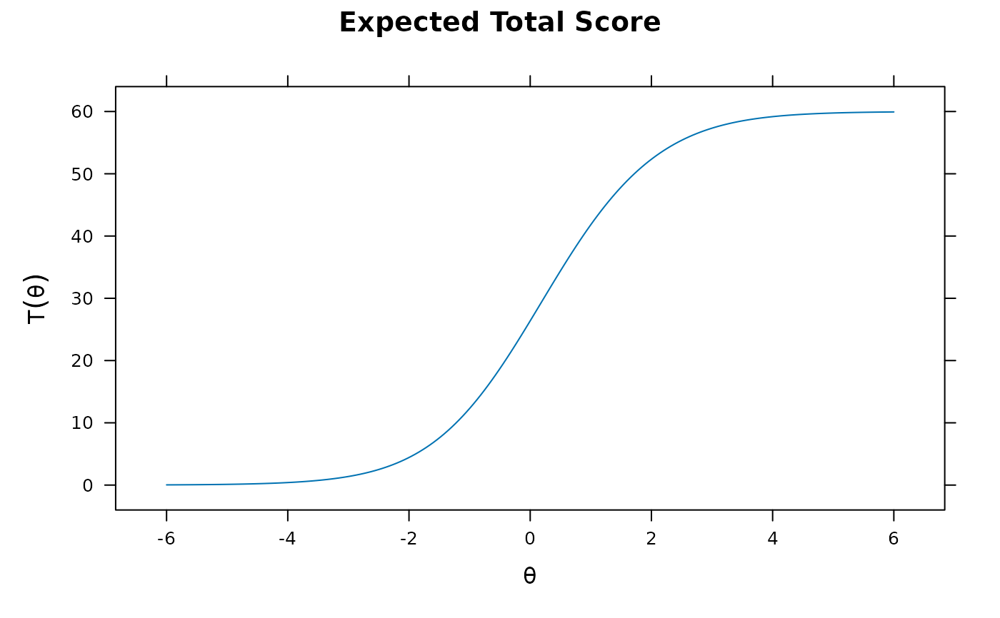
plot(pmod, type = 'info')
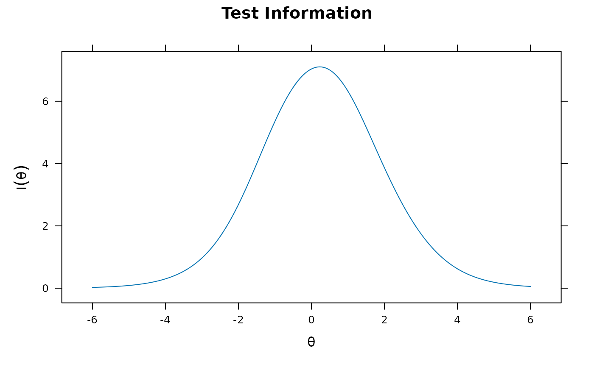
plot(pmod, type = 'trace')
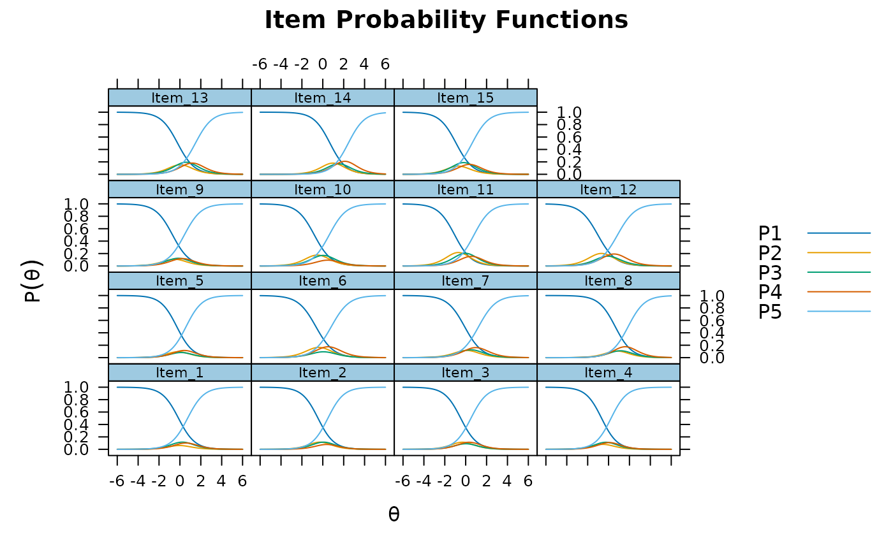
plot(pmod, type = 'infotrace')
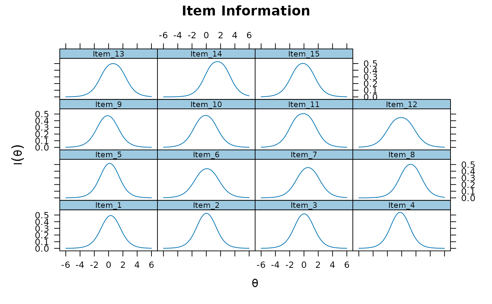
itemplot(pmod, 1, type = 'info', CE=TRUE)
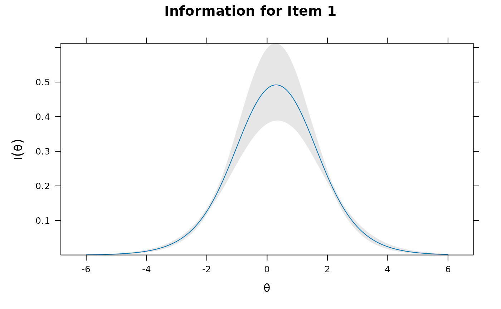
# standardized loadings
summary(pmod)
#> F1 h2
#> Item_1 0.657 0.431
#> Item_2 0.667 0.445
#> Item_3 0.664 0.440
#> Item_4 0.672 0.452
#> Item_5 0.665 0.442
#> Item_6 0.627 0.393
#> Item_7 0.635 0.403
#> Item_8 0.655 0.429
#> Item_9 0.646 0.417
#> Item_10 0.644 0.414
#> Item_11 0.651 0.423
#> Item_12 0.628 0.394
#> Item_13 0.649 0.421
#> Item_14 0.659 0.435
#> Item_15 0.651 0.424
#>
#> SE.F1
#> Item_1 0.0148
#> Item_2 0.0146
#> Item_3 0.0147
#> Item_4 0.0146
#> Item_5 0.0147
#> Item_6 0.0103
#> Item_7 0.0104
#> Item_8 0.0112
#> Item_9 0.0103
#> Item_10 0.0100
#> Item_11 0.0099
#> Item_12 0.0103
#> Item_13 0.0098
#> Item_14 0.0114
#> Item_15 0.0100
#>
#> SS loadings: 6.364
#> Proportion Var: 0.424
#>
#> Factor correlations:
#>
#> F1
#> F1 1
# factor scores (EAP)
fscores(pmod, method = 'EAPsum', full.scores=FALSE) # EAPs for sum-scores
#> Sum.Scores F1 SE_F1 observed expected std.res
#> 0 0 -2.473 0.636 185 159.981 1.978
#> 1 1 -2.074 0.550 128 111.384 1.574
#> 2 2 -1.923 0.542 139 121.160 1.621
#> 3 3 -1.795 0.533 127 129.270 0.200
#> 4 4 -1.746 0.545 165 173.580 0.651
#> 5 5 -1.567 0.494 208 166.136 3.248
#> 6 6 -1.458 0.482 177 172.721 0.326
#> 7 7 -1.359 0.472 182 178.029 0.298
#> 8 8 -1.278 0.468 183 190.094 0.515
#> 9 9 -1.175 0.448 180 190.911 0.790
#> 10 10 -1.090 0.439 202 194.364 0.548
#> 11 11 -1.008 0.430 179 197.099 1.289
#> 12 12 -0.933 0.424 201 201.025 0.002
#> 13 13 -0.855 0.415 198 202.155 0.292
#> 14 14 -0.782 0.409 207 203.694 0.232
#> 15 15 -0.711 0.403 181 204.830 1.665
#> 16 16 -0.644 0.398 189 206.117 1.192
#> 17 17 -0.576 0.393 201 206.492 0.382
#> 18 18 -0.511 0.389 199 206.863 0.547
#> 19 19 -0.448 0.386 193 206.984 0.972
#> 20 20 -0.386 0.382 197 207.058 0.699
#> 21 21 -0.324 0.379 217 206.717 0.715
#> 22 22 -0.264 0.377 218 206.299 0.815
#> 23 23 -0.204 0.375 221 205.701 1.067
#> 24 24 -0.145 0.373 195 205.020 0.700
#> 25 25 -0.087 0.371 201 204.077 0.215
#> 26 26 -0.029 0.370 192 203.044 0.775
#> 27 27 0.029 0.369 185 201.860 1.187
#> 28 28 0.086 0.368 201 200.584 0.029
#> 29 29 0.144 0.368 186 199.088 0.928
#> 30 30 0.201 0.368 224 197.499 1.886
#> 31 31 0.258 0.368 181 195.760 1.055
#> 32 32 0.315 0.369 163 193.920 2.220
#> 33 33 0.373 0.369 196 191.848 0.300
#> 34 34 0.431 0.370 176 189.679 0.993
#> 35 35 0.489 0.371 177 187.342 0.756
#> 36 36 0.548 0.373 183 184.891 0.139
#> 37 37 0.608 0.375 183 182.146 0.063
#> 38 38 0.668 0.377 176 179.302 0.247
#> 39 39 0.729 0.379 186 176.252 0.734
#> 40 40 0.791 0.382 148 173.079 1.906
#> 41 41 0.855 0.385 161 169.457 0.650
#> 42 42 0.919 0.389 161 165.771 0.371
#> 43 43 0.985 0.393 165 161.820 0.250
#> 44 44 1.053 0.398 172 157.760 1.134
#> 45 45 1.122 0.402 153 152.878 0.010
#> 46 46 1.193 0.408 138 148.101 0.830
#> 47 47 1.267 0.414 164 142.989 1.757
#> 48 48 1.346 0.422 146 137.893 0.690
#> 49 49 1.422 0.428 149 130.935 1.579
#> 50 50 1.505 0.435 149 124.775 2.169
#> 51 51 1.592 0.444 126 118.251 0.713
#> 52 52 1.691 0.460 122 112.283 0.917
#> 53 53 1.775 0.464 101 101.154 0.015
#> 54 54 1.875 0.474 99 93.550 0.563
#> 55 55 1.987 0.487 78 85.795 0.842
#> 56 56 2.144 0.526 79 80.637 0.182
#> 57 57 2.210 0.516 66 59.034 0.907
#> 58 58 2.343 0.526 58 51.550 0.898
#> 59 59 2.512 0.539 41 44.662 0.548
#> 60 60 2.872 0.613 42 46.649 0.681
# EAP scores from full response data
fs <- fscores(pmod)
# compare to bifactor scores (marginal vs conditional)
bfs <- fscores(mod, method = 'MAP')
cor(bfs[,1], fs)
#> F1
#> [1,] 0.9789291
###########################
# Two tier example projected to simple structure
# simulate data
set.seed(1234)
a <- matrix(c(
0,1,0.5,NA,NA,
0,1,0.5,NA,NA,
0,1,0.5,NA,NA,
0,1,0.5,NA,NA,
0,1,0.5,NA,NA,
0,1,NA,0.5,NA,
0,1,NA,0.5,NA,
0,1,NA,0.5,NA,
1,0,NA,0.5,NA,
1,0,NA,0.5,NA,
1,0,NA,0.5,NA,
1,0,NA,NA,0.5,
1,0,NA,NA,0.5,
1,0,NA,NA,0.5,
1,0,NA,NA,0.5,
1,0,NA,NA,0.5),ncol=5,byrow=TRUE)
d <- matrix(rnorm(16))
items <- rep('2PL', 16)
sigma <- diag(5)
sigma[1,2] <- sigma[2,1] <- .4
dataset <- simdata(a,d,2000,itemtype=items,sigma=sigma)
itemstats(dataset)
#> $overall
#> N mean.total sd.total std.alpha alpha SEM.alpha mean.r sd.r
#> 2000 7.086 3.077 0.66 0.662 1.79 0.108 0.058
#>
#> $itemstats
#> N K mean sd cor_if_rm smc alpha_if_rm
#> Item_1 2000 2 0.288 0.453 0.241 0.093 0.650
#> Item_2 2000 2 0.571 0.495 0.276 0.124 0.646
#> Item_3 2000 2 0.705 0.456 0.245 0.097 0.650
#> Item_4 2000 2 0.133 0.340 0.183 0.061 0.656
#> Item_5 2000 2 0.601 0.490 0.246 0.106 0.650
#> Item_6 2000 2 0.587 0.492 0.274 0.103 0.646
#> Item_7 2000 2 0.379 0.485 0.304 0.119 0.642
#> Item_8 2000 2 0.378 0.485 0.256 0.099 0.649
#> Item_9 2000 2 0.386 0.487 0.246 0.090 0.650
#> Item_10 2000 2 0.322 0.467 0.261 0.097 0.648
#> Item_11 2000 2 0.402 0.490 0.315 0.125 0.640
#> Item_12 2000 2 0.318 0.466 0.278 0.112 0.646
#> Item_13 2000 2 0.368 0.482 0.281 0.127 0.645
#> Item_14 2000 2 0.498 0.500 0.277 0.117 0.646
#> Item_15 2000 2 0.669 0.471 0.254 0.106 0.649
#> Item_16 2000 2 0.482 0.500 0.300 0.127 0.642
#>
specific <- "
S1 = 1-5
S2 = 6-11
S3 = 12-16"
model <- '
G1 = 1-8
G2 = 9-16
COV = G1*G2'
# quadpts dropped for faster estimation, but not as precise
simmod <- bfactor(dataset, specific, model, quadpts = 15, TOL = 1e-3)
#>
#> Warning: Observed log-likelihood/log-posterior may still be increasing.
#> Final values were:
#> -19406.79, -19406.787, -19406.784
coef(simmod, simplify=TRUE)
#> $items
#> a1 a2 a3 a4 a5 d g u
#> Item_1 0.985 0.000 0.340 0.000 0.000 -1.104 0 1
#> Item_2 1.083 0.000 0.503 0.000 0.000 0.363 0 1
#> Item_3 0.925 0.000 0.539 0.000 0.000 1.068 0 1
#> Item_4 0.926 0.000 0.656 0.000 0.000 -2.290 0 1
#> Item_5 0.918 0.000 0.830 0.000 0.000 0.528 0 1
#> Item_6 0.967 0.000 0.000 0.456 0.000 0.433 0 1
#> Item_7 1.116 0.000 0.000 0.487 0.000 -0.639 0 1
#> Item_8 0.919 0.000 0.000 0.598 0.000 -0.620 0 1
#> Item_9 0.000 0.786 0.000 0.446 0.000 -0.542 0 1
#> Item_10 0.000 0.879 0.000 0.665 0.000 -0.924 0 1
#> Item_11 0.000 1.061 0.000 0.579 0.000 -0.512 0 1
#> Item_12 0.000 1.067 0.000 0.000 0.395 -0.955 0 1
#> Item_13 0.000 1.177 0.000 0.000 0.213 -0.697 0 1
#> Item_14 0.000 1.093 0.000 0.000 0.063 -0.011 0 1
#> Item_15 0.000 1.004 0.000 0.000 0.757 0.919 0 1
#> Item_16 0.000 1.082 0.000 0.000 0.581 -0.095 0 1
#>
#> $means
#> G1 G2 S1 S2 S3
#> 0 0 0 0 0
#>
#> $cov
#> G1 G2 S1 S2 S3
#> G1 1.000 0.394 0 0 0
#> G2 0.394 1.000 0 0 0
#> S1 0.000 0.000 1 0 0
#> S2 0.000 0.000 0 1 0
#> S3 0.000 0.000 0 0 1
#>
# simple structure projection
pirt2 <- pirt(simmod, model=model, project=1:2)
coef(pirt2, simplify=TRUE)
#> $items
#> a1 a2 d g u
#> Item_1 0.963 0.000 -1.078 0 1
#> Item_2 1.031 0.000 0.345 0 1
#> Item_3 0.878 0.000 1.010 0 1
#> Item_4 0.873 0.000 -2.132 0 1
#> Item_5 0.808 0.000 0.465 0 1
#> Item_6 0.928 0.000 0.415 0 1
#> Item_7 1.066 0.000 -0.609 0 1
#> Item_8 0.857 0.000 -0.577 0 1
#> Item_9 0.000 0.754 -0.520 0 1
#> Item_10 0.000 0.811 -0.849 0 1
#> Item_11 0.000 0.995 -0.480 0 1
#> Item_12 0.000 1.036 -0.926 0 1
#> Item_13 0.000 1.166 -0.690 0 1
#> Item_14 0.000 1.092 -0.011 0 1
#> Item_15 0.000 0.907 0.827 0 1
#> Item_16 0.000 1.012 -0.088 0 1
#>
#> $means
#> G1 G2
#> -0.004 -0.005
#>
#> $cov
#> G1 G2
#> G1 1.169 0.446
#> G2 0.446 1.106
#>
##################################
# simple structure estimates using mirt()
set.seed(1234)
a <- matrix(c(
1.5,NA,NA,
1.5,NA,NA,
1.5,NA,NA,
1.5,NA,NA,
1.5,NA,NA,
NA,1,NA,
NA,1,NA,
NA,1,NA,
NA,1,NA,
NA,1,NA,
NA,1,NA,
NA,NA,1.75,
NA,NA,1.75,
NA,NA,1.75,
NA,NA,1.75,
NA,NA,1.75),ncol=3,byrow=TRUE)
d <- matrix(rnorm(16))
items <- rep('2PL', 16)
sigma <- diag(3)
sigma[1,2] <- sigma[2,1] <- .8
dataset <- simdata(a,d,2000,itemtype=items,sigma=sigma)
itemstats(dataset)
#> $overall
#> N mean.total sd.total std.alpha alpha SEM.alpha mean.r sd.r
#> 2000 7.096 3.055 0.653 0.653 1.8 0.105 0.112
#>
#> $itemstats
#> N K mean sd cor_if_rm smc alpha_if_rm
#> Item_1 2000 2 0.297 0.457 0.299 0.160 0.633
#> Item_2 2000 2 0.544 0.498 0.315 0.173 0.630
#> Item_3 2000 2 0.685 0.464 0.307 0.148 0.632
#> Item_4 2000 2 0.144 0.352 0.223 0.113 0.643
#> Item_5 2000 2 0.589 0.492 0.317 0.180 0.630
#> Item_6 2000 2 0.615 0.487 0.265 0.106 0.637
#> Item_7 2000 2 0.380 0.486 0.282 0.122 0.635
#> Item_8 2000 2 0.404 0.491 0.262 0.120 0.638
#> Item_9 2000 2 0.392 0.488 0.257 0.095 0.638
#> Item_10 2000 2 0.304 0.460 0.273 0.099 0.636
#> Item_11 2000 2 0.386 0.487 0.268 0.107 0.637
#> Item_12 2000 2 0.338 0.473 0.204 0.222 0.645
#> Item_13 2000 2 0.363 0.481 0.210 0.208 0.645
#> Item_14 2000 2 0.508 0.500 0.230 0.229 0.642
#> Item_15 2000 2 0.650 0.477 0.211 0.204 0.644
#> Item_16 2000 2 0.496 0.500 0.228 0.255 0.642
#>
model <- "
S1 = 1-5
S2 = 6-11
S3 = 12-16
COV = S1*S2"
# quadrature increased to help with estimation stability (less stable due to
# higher trait correlations)
simmod <- mirt(dataset, model, quadpts=26)
#> Warning: Observed log-likelihood/log-posterior may still be increasing.
#> Final values were:
#> -18921.887, -18921.885, -18921.876
coef(simmod, simplify=TRUE)
#> $items
#> a1 a2 a3 d g u
#> Item_1 1.422 0.000 0.000 -1.182 0 1
#> Item_2 1.385 0.000 0.000 0.235 0 1
#> Item_3 1.364 0.000 0.000 1.045 0 1
#> Item_4 1.460 0.000 0.000 -2.396 0 1
#> Item_5 1.483 0.000 0.000 0.497 0 1
#> Item_6 0.000 0.981 0.000 0.558 0 1
#> Item_7 0.000 1.120 0.000 -0.616 0 1
#> Item_8 0.000 1.037 0.000 -0.480 0 1
#> Item_9 0.000 0.917 0.000 -0.522 0 1
#> Item_10 0.000 0.956 0.000 -0.982 0 1
#> Item_11 0.000 0.992 0.000 -0.559 0 1
#> Item_12 0.000 0.000 1.830 -1.054 0 1
#> Item_13 0.000 0.000 1.615 -0.824 0 1
#> Item_14 0.000 0.000 1.695 0.047 0 1
#> Item_15 0.000 0.000 1.719 0.934 0 1
#> Item_16 0.000 0.000 1.925 -0.031 0 1
#>
#> $means
#> S1 S2 S3
#> 0 0 0
#>
#> $cov
#> S1 S2 S3
#> S1 1.000 0.815 0
#> S2 0.815 1.000 0
#> S3 0.000 0.000 1
#>
summary(simmod)
#> S1 S2 S3 h2
#> Item_1 0.641 0.411
#> Item_2 0.631 0.398
#> Item_3 0.625 0.391
#> Item_4 0.651 0.424
#> Item_5 0.657 0.432
#> Item_6 0.499 0.249
#> Item_7 0.550 0.302
#> Item_8 0.520 0.271
#> Item_9 0.474 0.225
#> Item_10 0.490 0.240
#> Item_11 0.503 0.253
#> Item_12 0.732 0.536
#> Item_13 0.688 0.474
#> Item_14 0.706 0.498
#> Item_15 0.711 0.505
#> Item_16 0.749 0.561
#>
#> SS loadings: 2.056 1.541 2.574
#> Proportion Var: 0.128 0.096 0.161
#>
#> Factor correlations:
#>
#> S1 S2 S3
#> S1 1.000
#> S2 0.815 1
#> S3 0.000 0 1
# project to first dimension
# correlation structure makes it seem as though 2nd dimension
# could be measured by first dimension (but this is only partially true)
pirt <- pirt(simmod, project=1)
coef(pirt, simplify=TRUE)
#> $items
#> a1 d g u
#> Item_1 1.422 -1.181 0 1
#> Item_2 1.385 0.235 0 1
#> Item_3 1.363 1.044 0 1
#> Item_4 1.459 -2.396 0 1
#> Item_5 1.483 0.497 0 1
#> Item_6 0.761 0.525 0 1
#> Item_7 0.834 -0.564 0 1
#> Item_8 0.787 -0.445 0 1
#> Item_9 0.714 -0.492 0 1
#> Item_10 0.729 -0.921 0 1
#> Item_11 0.762 -0.522 0 1
#> Item_12 -0.048 -0.675 0 1
#> Item_13 -0.025 -0.562 0 1
#> Item_14 0.010 0.034 0 1
#> Item_15 -0.014 0.621 0 1
#> Item_16 -0.024 -0.016 0 1
#>
#> $means
#> F1
#> -0.003
#>
#> $cov
#> F1
#> F1 1.07
#>
fscores(simmod, method = 'EAPsum', full.scores=FALSE)
#> Sum.Scores S1 S2 S3 SE_S1 SE_S2 SE_S3 observed expected std.res
#> 0 0 -1.608 -1.597 -1.232 0.671 0.693 0.648 12 12.311 0.089
#> 1 1 -1.337 -1.324 -1.022 0.679 0.694 0.681 46 39.544 1.027
#> 2 2 -1.092 -1.083 -0.827 0.695 0.703 0.721 76 78.361 0.267
#> 3 3 -0.869 -0.867 -0.636 0.718 0.719 0.772 111 123.899 1.159
#> 4 4 -0.666 -0.669 -0.443 0.747 0.742 0.835 177 170.930 0.464
#> 5 5 -0.476 -0.483 -0.242 0.775 0.768 0.914 217 213.423 0.245
#> 6 6 -0.256 -0.264 -0.093 0.772 0.763 0.950 226 238.539 0.812
#> 7 7 -0.023 -0.031 0.027 0.760 0.754 0.962 243 243.434 0.028
#> 8 8 0.209 0.203 0.136 0.751 0.747 0.961 244 229.850 0.933
#> 9 9 0.436 0.434 0.248 0.745 0.744 0.949 189 201.393 0.873
#> 10 10 0.654 0.659 0.374 0.742 0.740 0.923 179 162.977 1.255
#> 11 11 0.860 0.871 0.523 0.735 0.729 0.876 123 120.535 0.224
#> 12 12 1.051 1.070 0.698 0.712 0.703 0.803 79 80.388 0.155
#> 13 13 1.254 1.279 0.864 0.691 0.681 0.745 40 47.947 1.148
#> 14 14 1.476 1.506 1.025 0.675 0.666 0.699 26 24.468 0.310
#> 15 15 1.724 1.752 1.187 0.662 0.658 0.661 10 9.700 0.096
#> 16 16 2.002 2.026 1.355 0.651 0.659 0.631 2 2.302 0.199
fscores(pirt, method = 'EAPsum', full.scores=FALSE)
#> Sum.Scores F1 SE_F1 observed expected std.res
#> 0 0 -1.700 0.675 12 2.305 6.387
#> 1 1 -1.577 0.692 46 16.935 7.063
#> 2 2 -1.406 0.707 76 56.394 2.611
#> 3 3 -1.184 0.714 111 117.838 0.630
#> 4 4 -0.916 0.709 177 181.955 0.367
#> 5 5 -0.620 0.693 217 231.301 0.940
#> 6 6 -0.317 0.674 226 259.082 2.055
#> 7 7 -0.020 0.661 243 264.518 1.323
#> 8 8 0.271 0.656 244 248.783 0.303
#> 9 9 0.556 0.658 189 214.952 1.770
#> 10 10 0.838 0.666 179 168.691 0.794
#> 11 11 1.117 0.679 123 117.757 0.483
#> 12 12 1.386 0.689 79 70.496 1.013
#> 13 13 1.633 0.692 40 34.033 1.023
#> 14 14 1.843 0.684 26 12.024 4.030
#> 15 15 2.008 0.668 10 2.666 4.492
#> 16 16 2.130 0.649 2 0.270 3.330
#####################
## Using non-quadrature estimators
simmod.MHRM <- mirt(dataset, model, method='MHRM')
simmod.MHRM
#>
#> Call:
#> mirt(data = dataset, model = model, method = "MHRM")
#>
#> Full-information item factor analysis with 3 factor(s).
#> Converged within 0.001 tolerance after 55 MHRM iterations.
#> mirt version: 1.48.5
#> M-step optimizer: NR1
#> Latent density type: Gaussian
#> Average MH acceptance ratio(s): 0.324
#>
#> Log-likelihood = -18922.72, SE = 0.024
#> Estimated parameters: 33
#> AIC = 37911.43
#> BIC = 38096.26; SABIC = 37991.42
#> G2 (65502) = 8570.33, p = 1
#> RMSEA = 0, CFI = NaN, TLI = NaN
summary(simmod.MHRM)
#> S1 S2 S3 h2
#> Item_1 0.635 0.403
#> Item_2 0.627 0.393
#> Item_3 0.626 0.392
#> Item_4 0.650 0.423
#> Item_5 0.664 0.440
#> Item_6 0.501 0.251
#> Item_7 0.550 0.302
#> Item_8 0.521 0.272
#> Item_9 0.481 0.231
#> Item_10 0.480 0.231
#> Item_11 0.506 0.256
#> Item_12 0.732 0.536
#> Item_13 0.694 0.481
#> Item_14 0.707 0.500
#> Item_15 0.713 0.508
#> Item_16 0.749 0.561
#>
#> SS loadings: 2.052 1.542 2.586
#> Proportion Var: 0.128 0.096 0.162
#>
#> Factor correlations:
#>
#> S1 S2 S3
#> S1 1.000
#> S2 0.802 1
#> S3 0.000 0 1
anova(simmod, simmod.MHRM) # similar
#> AIC SABIC HQ BIC logLik X2 df p
#> simmod 37909.75 37989.74 37977.62 38094.58 -18921.88
#> simmod.MHRM 37911.43 37991.42 37979.30 38096.26 -18922.72 -1.679 0 NaN
# 1) Must build a suitable grid to integrate over, with focus on the
# projected dimensions
customTheta <- pirt_customTheta(simmod.MHRM, project=1)
head(customTheta)
#> [,1] [,2] [,3]
#> [1,] -6 2.845344 -2.8017181
#> [2,] -6 -2.228875 2.4904629
#> [3,] -6 1.257453 -0.3764781
#> [4,] -6 -1.259148 -1.0019925
#> [5,] -6 2.227180 2.2627537
#> [6,] -6 -2.847039 0.7483505
pairs(customTheta)
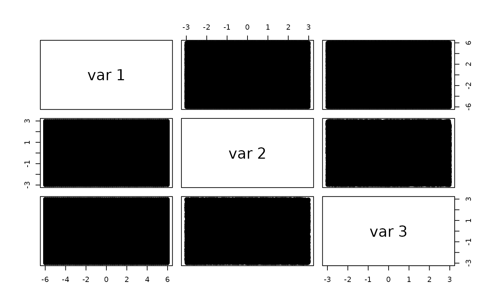
# 2) compute model with filled-in E-table, using previous parameter estimates
simmod.fill <- mirt(dataset, model, TOL=NaN,
pars=mod2values(simmod.MHRM),
technical=list(customTheta=customTheta))
simmod.fill
#>
#> Call:
#> mirt(data = dataset, model = model, pars = mod2values(simmod.MHRM),
#> TOL = NaN, technical = list(customTheta = customTheta))
#>
#> Full-information item factor analysis with 3 factor(s).
#> Converged within NaN tolerance after 1 EM iterations.
#> mirt version: 1.48.5
#> M-step optimizer: BFGS
#> EM acceleration: Ramsay
#> Number of rectangular quadrature: 30500
#> Latent density type: Gaussian
#>
#> Log-likelihood = -18922.71
#> Estimated parameters: 33
#> AIC = 37911.43
#> BIC = 38096.26; SABIC = 37991.41
#> G2 (65502) = 8570.93, p = 1
#> RMSEA = 0, CFI = NaN, TLI = NaN
# 3) Use model with filled-in E-table
pirt2 <- pirt(simmod.fill, project=1)
coef(pirt2, simplify=TRUE)$items
#> a1 d g u
#> Item_1 1.41414324 -1.17093861 0 1
#> Item_2 1.38046452 0.24240296 0 1
#> Item_3 1.36914477 1.05314880 0 1
#> Item_4 1.46509102 -2.39055410 0 1
#> Item_5 1.50148552 0.50752198 0 1
#> Item_6 0.75176175 0.52693984 0 1
#> Item_7 0.82231090 -0.55810044 0 1
#> Item_8 0.77703895 -0.43990070 0 1
#> Item_9 0.70853451 -0.48753162 0 1
#> Item_10 0.71501067 -0.91388127 0 1
#> Item_11 0.75274991 -0.51680516 0 1
#> Item_12 -0.04775602 -0.67505625 0 1
#> Item_13 -0.02532217 -0.56257789 0 1
#> Item_14 0.01057526 0.03405596 0 1
#> Item_15 -0.01420447 0.62119838 0 1
#> Item_16 -0.02458671 -0.01612301 0 1
coef(pirt, simplify=TRUE)$items
#> a1 d g u
#> Item_1 1.42162278 -1.18148069 0 1
#> Item_2 1.38514564 0.23536734 0 1
#> Item_3 1.36349419 1.04445854 0 1
#> Item_4 1.45943707 -2.39564826 0 1
#> Item_5 1.48309291 0.49673583 0 1
#> Item_6 0.76068268 0.52457289 0 1
#> Item_7 0.83373365 -0.56443215 0 1
#> Item_8 0.78667462 -0.44529768 0 1
#> Item_9 0.71374556 -0.49204639 0 1
#> Item_10 0.72863059 -0.92119074 0 1
#> Item_11 0.76165321 -0.52217202 0 1
#> Item_12 -0.04771669 -0.67482525 0 1
#> Item_13 -0.02466478 -0.56245029 0 1
#> Item_14 0.01039019 0.03400421 0 1
#> Item_15 -0.01387581 0.62126673 0 1
#> Item_16 -0.02397110 -0.01600265 0 1
# }
if (FALSE) { # \dontrun{
# randomized Halton sequence
theta <- pirt_customTheta(mod, quadpts2=50)
head(theta)
pairs(theta)
# Fixed Halton sequence for nuisance dimensions
theta <- pirt_customTheta(mod, grid='Halton')
head(theta)
pairs(theta)
# rectangular
theta <- pirt_customTheta(mod, grid='rectangular', quadpts=61, quadpts2=5)
head(theta)
pairs(theta)
} # }